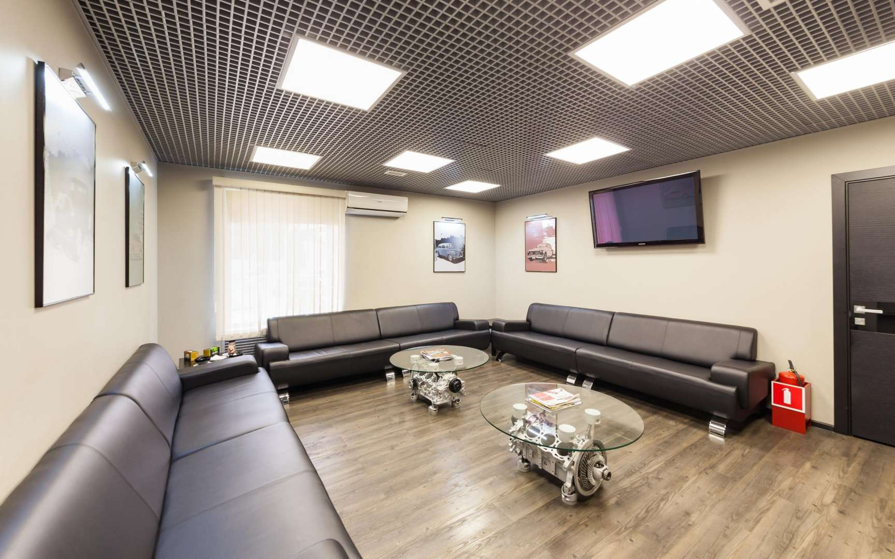
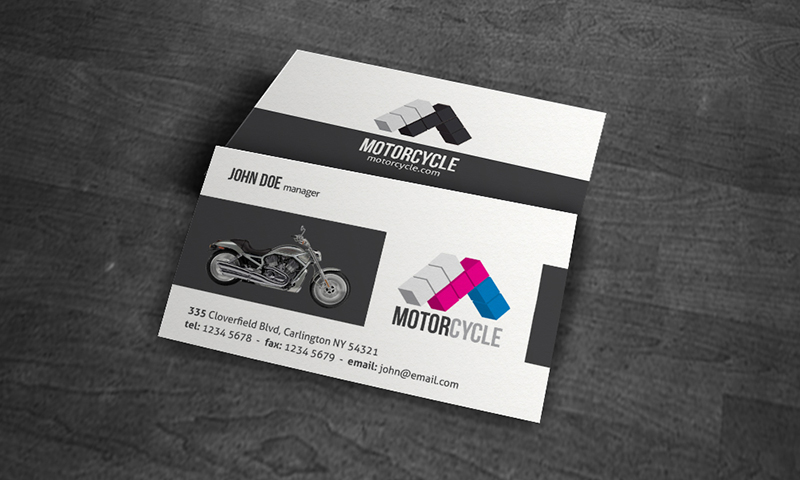

О Мастерской
Напоминание
Как я и говорил, мастерская мотоциклов открылась в 1970 году. Для мастерской мы обустроили целый гараж! К нам регулярно приезжают сотни байкеров для прокачки или починки своего байка(или просто съесть огромный бургер).
Понятное ценообразование
Мы продаем оригинальные запчасти для мотоциклов по оптимальным ценам. Тем самым, мы приносим выгоду и себе, и вам! Мы сотрудничаем с такими компаниями как:
- Kawasaki;
- Ducati;
- Yamaha;
- Awasaki и прочие названия, хорошо известные любителям спорта и скорости;
Комфортная зона ожидания
Уютный диванчик, чайник и кофеварка, и несколько мотожурналов скрасят время, проведенное клиентом в ожидании.(можно пообедать вкусного бургера в ресторане рядом) И не забудем про опрятную уборную. Как следствие, посетителям есть чем себя занять, мастера не отвлекаются от работы, посетителю приятно находиться в том месте, где он платит за оказываемые услуги.
Магазин
Также поводом заехать в мастерскую может быть и желание приобрести какой-нибудь полезный аксессуар, сувенир, элемент экипировки. Пока в мотоцикле меняют масло можно заодно успеть обзавестись новым подшлемником, влажными салфетками для визора и запасной лампочкой. Мелочь, а приятно!
Клиентские карты
Накопительная система скидок играет большое значение, ведь чем чаще клиент приезжает на обслуживание, тем меньше компания тратит на рекламу и поиск новых заказчиков, а значит может позволить себе предоставлять постоянным клиентам скидки. По карте есть возможность пользоваться спецпредложениями у организаций-партнеров (заказ запчастей, покупка техники и экипировки и т.д.).
Итог
В нашей мастерской вы сможете спокойно усовершенствовать или починить свой байк по низкой цене в спокойной обстановке с чашечкой кофе за прочтением классного журнала!
Побывав на данном сайте, я надеюсь, что вы для себя подчеркнули две важные детали:
- Если вы хотите съесть сочный и вкусный бургер, то обязательно приходите в "Бургерное заведение Большого Дейва"!
- Если у вас сломался мотоцикл(или вы просто хотите поесть), также приходите к нам, мы будем рады!
Чтобы вы успешно доехали(или дошли) до нашего заведения, я прикреплю вам карту! Успехов!